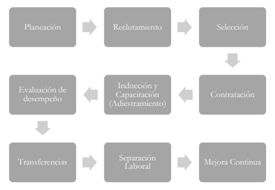
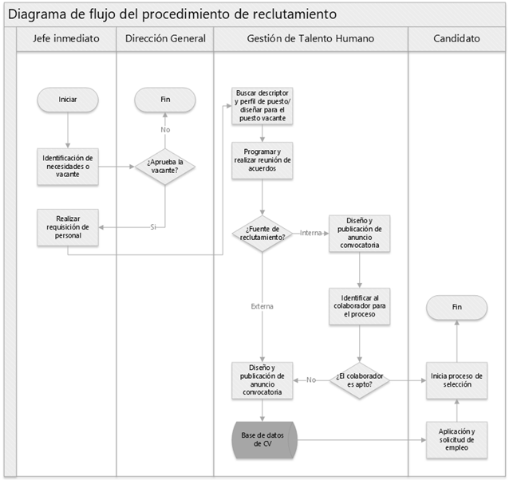
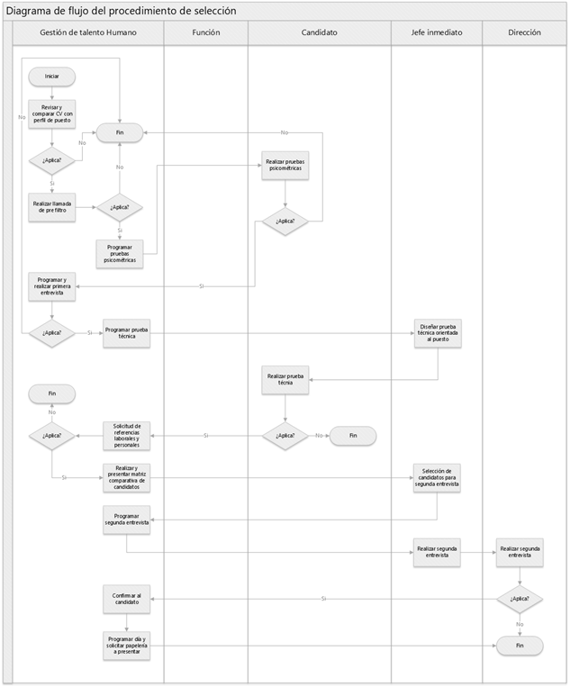

5 Diseño del proceso de dotación de talento humano en GAIA Business School, Guatemala
5.1 Resumen
El presente proyecto, dividido en tres fases, aborda el diseño de un proceso sólido de dotación de talento humano, entendido como el conjunto de pasos necesarios para encontrar y contratar a las personas adecuadas para un puesto específico. El proceso desarrollado permite identificar y controlar de manera significativa el porcentaje de rotación, uno de los principales problemas organizacionales. Esto ha fortalecido a la empresa, ya que contar con el talento calificado le permite ejecutar sus operaciones de manera exitosa.
El proceso inicia con una planificación estratégica y continúa con las etapas de búsqueda, selección, contratación, inducción, desarrollo profesional, transferencia, desvinculación laboral y mejora continua, consolidando así un ciclo completo de gestión de talento. Para su implementación se elaboraron manuales, guías y formatos que orientan al responsable de cada etapa. Además, se documentaron descriptores y perfiles de puesto para que los colaboradores comprendan claramente sus funciones y responsabilidades. Como parte del compromiso con la sostenibilidad, se diseñó un plan de concientización sobre el ahorro de papel en las oficinas, contribuyendo al cuidado del medio ambiente y a la reducción de costos operativos. Finalmente, se desarrolló un plan anual de capacitación, con el objetivo de fomentar el crecimiento continuo de los colaboradores.
5.2 Abstract
This Project, structured in three phases, focuses on the design of a robust human talent staffing process, understood as the series of steps necessary to find and hire the right individuals for specific positions. The developed process enables the organization to significantly identify and control employee turnover, one of the main organizational challenges. This has strengthened the company, as having qualified talent allows it to carry out its operations successfully. The process begins with strategic planning and continues through the stages of recruitment, selection, hiring, Onboarding, profesional development, internal transfers, offboarding, and continuous improvement, thus consolidating a complete talent management cycle. For its implementation, manuals, guidelines, and templates were developed to guide those responsible for each stage. Additionally, job descriptors and profiles were documented to ensure that employees crearly understand their roles and responsibilities. As part of the organization´s commitment to sustainability, a paper-saving awareness plan was designed for office use, contributing to environmental protection and reducing operational costs. Finally, an annual training plan was created to promote the continuous professional development of employees.
5.3 Palabras claves
Contratación, rotación laboral, capacitación, recursos humanos, reclutamiento, selección.
5.4 Introducción
La gestión del talento humano ha dejado de ser una función meramente operativa para convertirse en un eje estratégico dentro de las organizaciones modernas. Uno de los problemas más frecuentes que enfrentan las empresas es la alta rotación laboral, la cual afecta negativamente la productividad, incrementa los costos y debilita la estabilidad de los equipos de trabajo (Chiavenato, 2011). En este contexto, contar con un proceso estructurado de dotación de talento humano permite atraer, seleccionar y retener al talento adecuado para cada puesto. Tal como señala Alles (2019), una gestión basada en competencias aporta claridad y coherencia en cada etapa del ciclo de vida del colaborador. Por su parte, Dessler (2009) destaca la importancia de diseñar políticas y prácticas que acompañen el desarrollo continuo del recurso humano. Este proyecto busca responder a estas necesidades mediante un modelo integral y sostenible que fortalezca el capital humano y aporte valor real a la organización.
5.5 Artículo
5.5.1 Diagnóstico
Como punto de partida para este proyecto se realizó un diagnóstico mediante un diagrama de Ishikawa, el cual identificó como problema principal la inadecuada gestión del talento humano en la empresa. A través del análisis de las causas distribuidas en las categorías de las 6M (método, mano de obra, materiales, maquinaria, medición y medio ambiente), se evidenció que la falta de procedimientos claros, la ausencia de planificación, y la contratación de personal sin el perfil adecuado afectan directamente al desempeño organizacional. El efecto más relevante identificado fue una alta rotación de personal, alimentada por la integración deficiente del nuevo talento por falta de inducción. Como causa raíz, se determinó un proceso de selección inadecuado, ya que contratar a personas sin las competencias requeridas genera insatisfacción y desvinculación temprana.
5.5.2 Proceso de dotación de talento humano
El proceso de dotación de talento humano es un conjunto ordenado de etapas que permiten a una organización atraer, seleccionar, integrar, desarrollar y, en caso necesario, desvincular al personal de forma estratégica. Este proceso fue diseñado con base en las necesidades identificadas durante el diagnóstico organizacional, y está representado mediante un diagrama de bloques que ilustra el flujo lógico de cada fase tal como se muestra en la siguiente figura.
Figura 5.1: Diagrama de bloques que muestra cada fase del proceso de dotación de talento humano
Nota. Elaboración propia, utilizando software Microsoft Visio.
A continuación, se describen las etapas que conforman este proceso; cabe resaltar que, para realizar esta gestión de manera precisa y eficiente, el encargado de cada gestión puede apoyarse en guías, manuales y formatos diseñados para trazar el camino y cumplir con todos los requerimientos:
Planeación: en esta fase se identifican las necesidades de personal con base en los objetivos estratégicos de la empresa. Se analizan vacantes, cargas de trabajo y competencias requeridas para anticipar futuras contrataciones; para realizar esto son de mucha ayuda los descriptores y perfiles de puesto.
Reclutamiento: consiste en atraer candidatos potenciales a través de fuentes internas y externas. Se definen los canales de difusión, los requisitos del puesto y los criterios de preselección.
Selección: se evalúan los perfiles de los candidatos mediante entrevistas, pruebas psicométricas y técnicas, verificaciones de referencias y filtros alineados al perfil de puesto previamente diseñado.
Contratación: una vez seleccionado el candidato adecuado, se formaliza su ingreso a través de un contrato, cumpliendo con los requisitos legales y administrativos correspondientes.
Inducción y capacitación: en esta etapa se brinda al nuevo colaborador la información necesaria sobre la empresa, su cultura, políticas y funciones específicas. Se facilita también la capacitación inicial para el desempeño eficiente de sus tareas.
Evaluación de desempeño: se monitorea el rendimiento del colaborador en función de metas y competencias definidas. Se ha implementado la evaluación 360 grados para abarcar mejor el rendimiento del colaborador. Esta etapa permite identificar fortalezas, áreas de mejora y oportunidades de desarrollo.
Transferencias: permite la reubicación interna del personal en función a sus habilidades, intereses y las necesidades de la empresa; se han implementado tres tipos, la transferencia vertical, horizontal y diagonal, promoviendo la retención y el crecimiento profesional.
Separación laboral: se gestiona de forma ordenada y respetuosa la desvinculación de un colaborador, ya sea por renuncia, terminación de contrato o jubilación. Se documenta el proceso para fines administrativos y de mejora.
Mejora continua: se realiza una revisión periódica del proceso en su totalidad para identificar oportunidades de optimización, incorporando retroalimentación, indicadores de desempeño, y tendencial del entorno; para esta etapa se utilizó el ciclo de Deming o ciclo PDCA.
5.5.3 Características del proceso de dotación de talento humano
Sistematización: el proceso sigue una secuencia lógica de etapas definidas, lo cual facilita su ejecución de forma ordenada y consistente, evitando improvisaciones y garantizando uniformidad en la gestión.
Trazabilidad: cada etapa deja evidencia documental que permite verificar decisiones tomadas, analizar indicadores de eficiencia y generar mejoras a partir de datos objetivos.
Adaptabilidad: el proceso diseñado puede ajustarse a distintos contextos y necesidades organizacionales, manteniendo su estructura general, pero permitiendo adaptaciones según el tamaño o naturaleza de la empresa.
5.5.4 Ventajas de contar con un diseño sólido de dotación de talento humano
Mejora en la calidad del talento incorporado: un proceso bien estructurado permite definir con precisión los perfiles requeridos y aplicar filtros adecuados durante la selección. Esto asegura que los candidatos contratados posean las competencias técnicas y actitudinales necesarias al puesto.
Reducción de la rotación de personal: al contratar personal alineado con el perfil del puesto y brindarles una adecuada inducción y seguimiento, se incrementa la satisfacción laboral, lo cual disminuye la rotación y sus costos asociados.
Optimización de los costos de contratación: la planificación y estandarización del proceso reducen gastos innecesarios derivados de errores en la contratación, repeticiones de procesos o tiempos prolongados de vacantes sin cubrir.
5.5.5 Diagrama de reclutamiento y selección
A continuación, se presenta el diagrama de flujo de reclutamiento y selección que se considera el corazón de todo el proceso, debido a que depende de estos si el colaborador se apega a todos los requerimientos del puesto y asegura su permanencia en la empresa.
Figura 5.2: Diagrama de flujo del procedimiento de reclutamiento de personal.
Nota. Elaboración propia, utilizando software Microsoft Visio.
Figura 5.3: Diagrama de flujo del procedimiento de selección de personal
Nota. Elaboración propia, utilizando software Microsoft Visio.
5.6 Conclusiones
Un proceso sólido y bien estructurado de dotación de talento humano no solo contribuye a la reducción de la rotación de personal, sino que también fortalece la capacidad de la organización para alcanzar sus objetivos estratégicos. La planificación, selección adecuada y desarrollo profesional continuo son pilares fundamentales para el éxito organizacional.
La implementación de herramientas y metodologías, como manuales y perfiles de puesto, garantiza que cada etapa del proceso sea consistente, medible y adaptable. Esto permite optimizar recursos y tomar decisiones informadas basadas en indicadores de desempeño.
Al incorporar talento adecuado y fomentar su desarrollo profesional, el proceso de dotación genera un ambiente laboral más estable, motivador y colaborativo. Además, iniciativas complementarias como la concientización ambiental benefician tanto a la empresa como al medio ambiente, promoviendo una gestión responsable.
5.7 Recomendaciones
Establecer mecanismos de seguimiento para asegurar que el plan de capacitación anual responda a las necesidades emergentes de la organización y a los cambios en el entorno. Esto incrementará la competitividad del talento y su compromiso con la empresa.
Monitorear y evaluar el desempeño del proceso de dotación mediante indicadores clave como tiempo de contratación, porcentaje de rotación y satisfacción del personal. Usar los resultados para ajustar y mejorar continuamente cada etapa.
- Integrar soluciones basadas en IA no solo puede optimizar significativamente diversas etapas del proceso, como la revisión de currículums, análisis de competencias, predicción de rotación o desempeño, y automatización del seguimiento a candidatos para agilizar la toma de decisiones, sino que también mejora la precisión en la selección de talento totalmente alineado al perfil requerido, fortaleciendo la efectividad del proceso.
5.8 Referencias
[1] Alles, M. (2005). Gestión del talento humano basado en competencias. Editorial Granica. https://drive.google.com/file/d/1o-kqZKqmhSITxWv-QIM_BN7j5LkJ3UaH/view
[2] Alles, M. (2006). Dirección estratégica de recursos humanos. Editorial Granica. https://www.bqm.com.pe/libros/Martha Alles - Direccion estrategica de recursos humanos - Casos.pdf
[3] Chiavenato, I. (2015). Gestión del talento humano. McGraw-Hill. https://archive.org/details/gestion-del-talento-humano-3e
[4] Dessler, G. (2001). Administración de personal. Pearson. https://universitad.com/economia-y-finanzas/administracion-de-personal-6-edicion-gary-dessler/
[5] Dessler, G. (2009). Administración de recursos humanos. Pearson Educación. https://studylib.es/doc/8849041/administracion-de-recursos-humanos-11va-dessler-1?p=3
[6] Ivancevich, J. (2005). Administración de recursos humanos. McGraw-Hill. https://es.scribd.com/document/358298940/Ivancevich-2005-Administracion-de-RH-8-Seleccion-de-Recursos-Humanos